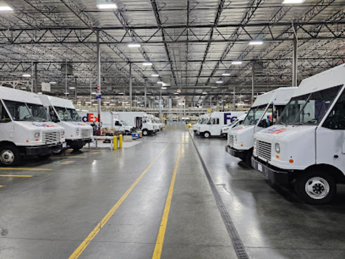
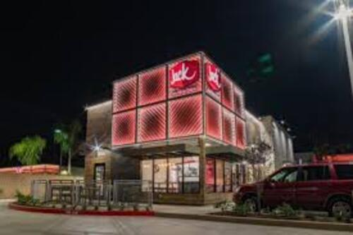
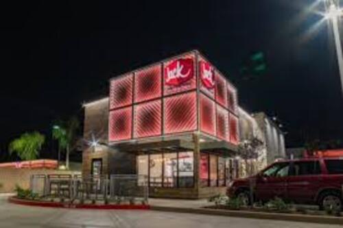
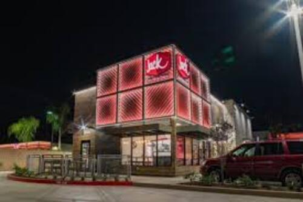

Carlos Zelaya
My name is Carlos Zelaya. I have been alive for 22 years and recently I’ve been working at Fedex for around a year and I’ve been attending UC Riverside for four years now. I was a full-time student for a while. I still am. I am first and foremost, a full-time student. I had to get a job recently to help out with expenses and hope to pursue your career in teaching. I am constantly going between work in school juggling the two it’s hard but rewarding and has given me a lot of experience and help shape me into the person. I am today. Currently I’m working at a Fedex warehouse moving boxes, and loading trailers. It’s very physical work and I’ve hurt myself before. But the job is giving me good hours and experience. I’ve learned how to properly lift how to use leverage how to operate some machinery in the trailer and in the warehouse. Coworkers are pleasant and agreeable and managers are managers. I load the overhead flow as well as IC’s. We take the boxes certain Then they’re moved down the line and loaded up by me and others into new trailers. We stack boxes and walls and GoPro by row establishing wall after wall trying to fill the trailer up as much as possible and clear top space.
I have experience in the fast food service working at Jack-in-the-Box as well as Bakers so I have some service in customer service. I know how to cook food and prepare food as well as well as operate the pressure cooking machine the grill as well as a hot plate system and various toasters and water fountain machines. I have experience dealing with difficult customers and fast food, as well as dealing with the rush during fast food and can work well under pressure. I can handle physical labor as well as mental labor at Fedex. I’ve worked long eight hour shifts before I put massive strain on my body, but I’ve also put mass train on my body mentally through working with deadlines in school and also customers are in the fast food industry. Overall, I feel I have the experience needed to better connect with people in order to serve them more adequately.
I have been attending university now for four years, trying to get a bachelors in history so that I can further pursue my goal of becoming a teacher and teaching history to students. I have experience working on computers, although not much I can help for small certain technical problems. If need be I have essay writing experience. I can do creative writing as well right pictures up for ads. Write pieces on whatever sort of thing you need me to do. I need to research time. I’m gonna research researching. I’m finding information combing through books in order to find things I need. I feel that I am a good writer and I feel like I can be valuable to whatever organization or company I get a job with.
Experience
Worker
• Developed new ways to stack boxes and make walls
• Speaker at Fedex mandatory meetings that encourage brand loyalty to the great Fedex system
• Experience with lifting, stacking, balancing, and even using safety equipment
Fry Cook
• Responsible for checking out customers
• Cooking burgers and mexican food
• Maintaining and cleaing grill and other cooking equipment
Substitue Teaching Assistant
• Ran sessions to help students learn how to use a crayon and scissors(they were in pre-k)
• Reviewed and graded student attempts at coloring in the lines
• Learned nursery rhymes and helped open kids lunch for them
• TA'd for over 20 students each academic quarter
Education
UC Riverside
Portfolio

 

